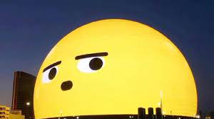
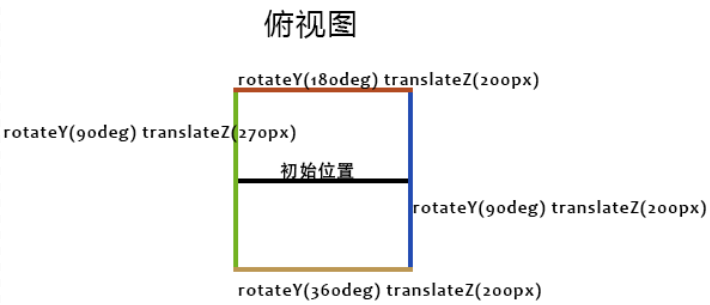
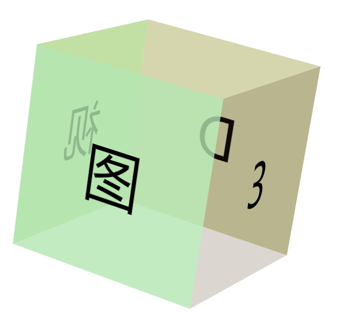
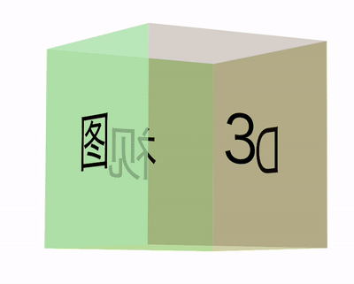
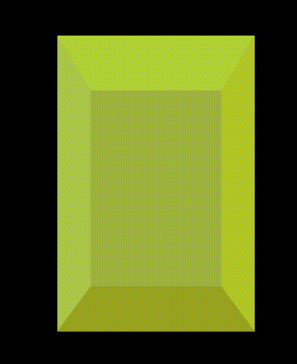
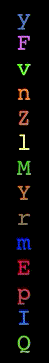

- 41 CSS 还原拉斯维加斯球数字动画
- 40 单标签下多色块随机文字随机颜色动画
- 39 CSS 也能实现 if 判断？实现动态高度下的不同样式展现
- 38 Flex 布局下居中溢出滚动截断问题
- 37 带圆角的虚线边框
- 36 现代 CSS 解决方案：文字颜色自动适配背景色
- 35 神奇的 3D 卡片反光闪烁动效
- 34 现代 CSS 解决方案：accent-color 强调色
- 33 巧用 has 和 drop-shadow 实现复杂布局效果
- 32 巧用 CSS + SVG 实现复杂线条光效动画
- 31 极具创意的鼠标交互动画
- 30 标准滚动条控制规范 scrollbar-color 和 scrollbar-width
- 29 类 ChatGpt 多行文本打字效果
- 28 神奇的卡片 Hover 效果与 Blur 的特性探究
- 27 渐变边框文字效果
- 26 巧妙使用多种方式实现单侧阴影
- 25 全尺寸的带圆角的渐变边框
- 24 开发中保证你用得到的 css 小技巧
- 23 您应该了解的 15 个有用的 CSS 属性
- 22 CSS 行元素的截断样式 box-decoration-break 属性
- 21 用 SASS 简化媒体查询
- 20 为什么你应该停止使用传统的 margin 和 padding 来设置 CSS 样式
- 19 sass 优化响应式布局代码
- 18 盘点 CSS 文本两端对齐的 N 种方式
- 17 如何修改滚动条的样式
- 16 CSS 模拟图片透明的棋盘背景
- 15 文本描边完美实现
- 14 你需要自定义 @property 而不是 CSS 变量的情况
- 13 从高度 0 过渡到自动高度
- 12 一些 css 语法解释
- 11 scss 日常用法
- 10 sass 指南
- 09 CSS 颜色设置透明度的新姿势
- 08 CSS 属性 appearance
- 07 CSS 动画性能优化
- 06 CSS 功能特性
- 05 CSS 中的 var() 函数
- 04 15 个你不知道的 CSS 属性
- 03 will-change
- 02 normalize.css 清除元素默认样式
- 01 纯 CSS 获取屏幕宽高
CSS 还原拉斯维加斯球数字动画
HaoTian · 2024-12-12 15:14:57
最近大家刷抖音，是否有刷到拉斯维加斯的新地标 「Sphere」：
场馆内部的视觉效果非常惊人，其中一个效果让我虎躯一震：

我的第一想法就是，这个看起来用 CSS 也可以实现嘛？还有 CSS 不能实现的？
本文，就将尝试使用 CSS，大致还原这个效果。
拆解动画效果
其实，上述的动画效果，本质就是一个 3D 立方体。
同时，3D 立方体上每个面存在颜色不一样的文字，文字和颜色都在随机变化。
也就是说，我们需要实现一个 3D 立方体：

同时，我们还需要实现这样一个动画效果 -- 文字和颜色都在随机变化的平面效果：

两者组合一下，再挪动 3D 元素的景深距离，就能实现我们想要的效果！
好，下面我们一个一个实现。
实现一个 3D 立方体
实现一个 3D 立方体，相对另外一个文字和颜色都在随机变化的平面效果而言，属于非常非常简单的一步了。
我们在非常多篇文章中也讲过具体的实现方式：
最常见的 3D 图形，莫过于一个 3D 立方体。
如果没有上下两个面，只是一个 4 个面的图形，大概是这样：

这样一个图形，利用 CSS 3D，如何快速实现呢？
首先，构造这么一个结构：
<div class="perspective">
<div class="container">
<div class="img">3</div>
<div class="img">D</div>
<div class="img">视</div>
<div class="img">图</div>
</div>
</div>
4 个面，就是最内层的 4 个 .img，首先，需要给两个父容器，设置 3D 的属性：
.perspective {
perspective: 3000px;
}
.container {
width: 400px;
height: 400px;
transform-style: preserve-3d;
}
简单解释一下：
perspective可以作用于元素的后代，设置在最上层即可；transform-style: preserve-3d设置给最终需要 3D 空间的元素的父容器之上，由于最终是 4 个.img需要 3D 空间，因此设置给.container即可。
接下来，就是最为核心的，如何设置 4 个 .img 元素的 3D 变换，使之形成 3D 立方体。
技巧就是：先旋转，再位移。
这里给出一个俯视效果图：
以上述 Demo 中的正方体为例子，class 为 .img 的 div 块的高宽为 400px*400px。那么要利用 4 个 这样的 div 拼接成一个正方体，需要分别将 4 个 div 绕 Y 轴旋转 [90°, 180°, 270°, 360°]，再 translateY(200px) 。
值得注意的是，一定是先旋转角度，再偏移距离，这个顺序很重要。
代码如下：
.img {
position: absolute;
top: 0;
left: 0;
width: 400px;
height: 400px;
}
@for $i from 1 through $imgCount {
.img:nth-child(#{$i}) {
transform: rotateY(($i * 90deg)) translateZ(200px);
}
}
效果如下：
此时，可能会觉得图片太太太大了，此时，我们可以通过给中间层 .container 设置一个恰当的 translateZ 进行视觉大小上的调节。
.container {
transform: translateZ(-3000px);
}
这样，就能得到恰当大小的立方体元素效果：
完整的代码，你可以戳这里：CodePen Demo -- 3D Cube
当然，对于我们这个效果，我们 5 要五个面（前后左右与上方即可），因此，我们基于上述的基础知识铺垫，重新实现一个我们需要的框架结构：
<div class="perspective">
<div class="container">
<div class="g-panel"></div>
<div class="g-panel"></div>
<div class="g-panel"></div>
<div class="g-panel"></div>
<div class="g-panel"></div>
</div>
</div>
并且，我们希望我们的图形是一个立方体，只需要稍微改造长宽和 translateZ() 的即可。这样，我们就能得到一个前后左右与上方 5 个面的立方体元素。
示意效果如下：
实现文字动画效果
OK，立方体我们先放在一边。
接下来，我们尝试来实现这个效果：

这个效果如果一个文字用一个 DIV 承载实现，那是非常容易的，但是这样势必会造成元素过多，再设置动画效果，则会导致页面太为卡顿。
所以，我们需要另辟蹊径。这里，我们可以使用多层渐变配合 background-clip: text。
首先，我们利用等宽字体，随机实现一列文字：
<div>ABCDEFGHIJKLMN</div>
div {
font-family: monospace;
text-align: center;
font-size: 25px;
width: 25px;
line-height: 25px;
color: #fff;
}
效果大致如下：
此时，如果我们再利用线性渐变，给每个字符的对应空间（也就 25px x 25px），设置上不同的颜色，大概是这样：
@function randomLinear($count) {
$value: "";
@for $i from 0 through ($count - 1) {
$value: $value + randomColor() + string.unquote(" 0 #{$i * 25}px,");
}
@return linear-gradient(string.unquote(#{$value}) randomColor() 0 100%);
}
@function randomColor() {
@return rgb(randomNum(255), randomNum(255), randomNum(255));
}
div {
// ...
background: randomLinear(14);
}
其中，randomLinear(14) 是一个 SASS 函数，参数 14 表示生成 14 层线性渐变，每一个文字区域的颜色都是随机的，经过编译后的其中一种结果如下：
div {
// ...
background: linear-gradient(
#feea96 0 25px,
#edde42 0 50px,
#e2344a 0 75px,
#cdab7e 0 100px,
#e16c8b 0 125px,
#dcdc7d 0 150px,
#dcb42a 0 175px,
#d6a587 0 200px,
#984f71 0 225px,
#221e34 0 250px,
#5e9a69 0 275px,
#a955e4 0 300px,
#4e908f 0 325px,
#8d177e 0 350px
);
}
上面，我们按照每间隔 25px 的高度，利用线性渐变随机设置了一种颜色，最终，能够得到这么个效果：
此时，我们只需要再设置 background-clip: text，配合透明文字颜色 color: transparent，就可以实现单个 div 内，单列文字，每个字体的颜色都是不一样的：
div {
// ...
background: randomLinear(14);
background-clip: text;
color: transparent;
}
此时，效果如下：

当然，文字颜色可以随机，那么文字本身也应该随机。这个不难，我们也可以借助 SASS 函数，编写一个随机字符的函数，通过元素的伪元素 content 进行设置。
那么此时，完整的代码可能是这样的：
<div></div>
$str: "QWERTYUIOPASDFGHJKLZXCVBNMabcdefghigklmnopqrstuvwxyz123456789";
$length: str-length($str);
@function randomLinear($count) {
$value: "";
@for $i from 0 through ($count - 1) {
$value: $value + randomColor() + string.unquote(" 0 #{$i * 25}px,");
}
@return linear-gradient(string.unquote(#{$value}) randomColor() 0 100%);
}
@function randomColor() {
@return rgb(randomNum(255), randomNum(255), randomNum(255));
}
@function randomChar() {
$r: random($length);
@return str-slice($str, $r, $r);
}
@function randomChars($number) {
$value: "";
@if $number > 0 {
@for $i from 1 through $number {
$value: $value + randomChar();
}
}
@return $value;
}
div {
position: relative;
width: 25px;
height: 350px;
&::before {
content: randomChars(14);
position: absolute;
font-family: monospace;
background: randomLinear(14);
background-clip: text;
color: transparent;
text-align: center;
font-size: 25px;
width: 25px;
line-height: 25px;
}
}
这样，每次 div 内的文字，都是从上面 SASS 函数中 $str 变量中随机取的：
接下来，我们需要实现文字的随机跳变，也很好做，我们需要在一开始，随机生成多个不同的 content，然后，借助 CSS 动画，进行切换。
div {
&::before {
content: randomChars(14);
--content1: "#{randomChars(14)}";
--content2: "#{randomChars(14)}";
--content3: "#{randomChars(14)}";
--content4: "#{randomChars(14)}";
animation: contentChange 1s infinite;
}
}
@keyframes contentChange {
20% {
content: var(--content1);
}
40% {
content: var(--content2);
}
60% {
content: var(--content3);
}
80% {
content: var(--content4);
}
}
这里，我们一次生成了 5 个 content，其中 4 个用 CSS 变量保存了起来，随后，在 CSS 动画中，利用提前生成好的 content，进行字符内容的替换，此时，整个效果如下：
随机内容有了，单个字体颜色不一样有了，就差颜色的随机跳变动画了，这个也非常好做，我们在多篇文章也提及过，利用 filter: hue-rotate() 可以快速实现内容的颜色切换。
div {
animation: colorChange 1s steps(12) infinite;
}
@keyframes colorChange {
100% {
filter: hue-rotate(360deg);
}
}
我们利用了 filter: hue-rotate() 加上了步骤动画（steps），成功的实现了颜色的跳变！效果如下：
当然，我们最终要实现的是整个面随机颜色加上随机文字的跳变动画，只需要在上述的基础上，利用 SASS 函数，循环重复多列操作即可。基于上述所有内容的铺垫，我们最终的单个面下的动画效果代码如下：
<div class="g-container">
<div></div>
// ... 一个 32 个子 div
<div></div>
</div>
@use "sass:string";
$str: "QWERTYUIOPASDFGHJKLZXCVBNMabcdefghigklmnopqrstuvwxyz123456789";
$length: str-length($str);
$size: 25;
$count: 41;
@function randomNum($max, $min: 0, $u: 1) {
@return ($min + random($max)) * $u;
}
@function randomLinear($count) {
$value: "";
@for $i from 0 through ($count - 1) {
$value: $value + randomColor() + string.unquote(" 0 #{$i * 25}px,");
}
@return linear-gradient(string.unquote(#{$value}) randomColor() 0 100%);
}
@function randomColor() {
@return rgb(randomNum(255), randomNum(255), randomNum(255));
}
@function randomChar() {
$r: random($length);
@return str-slice($str, $r, $r);
}
@function randomChars($number) {
$value: "";
@if $number > 0 {
@for $i from 1 through $number {
$value: $value + randomChar();
}
}
@return $value;
}
body,
html {
width: 100%;
height: 100%;
background: #000;
font-family: monospace;
}
.g-container {
position: relative;
width: 800px;
height: 800px;
display: flex;
animation: colorChange 1s steps(12) infinite;
div {
position: relative;
width: #{$size}px;
height: 800px;
flex-shrink: 0;
&::before {
position: absolute;
inset: 0;
text-align: center;
font-size: #{$size}px;
width: #{$size}px;
text-align: center;
line-height: #{$size}px;
color: transparent;
}
}
@for $i from 1 to $count {
div:nth-child(#{$i}) {
&::before {
content: randomChars(32);
--content1: "#{randomChars(32)}";
--content2: "#{randomChars(32)}";
--content3: "#{randomChars(32)}";
--content4: "#{randomChars(32)}";
animation: contentChange 1s infinite;
background: randomLinear(32);
background-clip: text;
}
}
}
}
@keyframes colorChange {
100% {
filter: hue-rotate(360deg);
}
}
@keyframes contentChange {
20% {
content: var(--content1);
}
40% {
content: var(--content2);
}
60% {
content: var(--content3);
}
80% {
content: var(--content4);
}
}
这样，我们就成功的实现了单个平面下的，颜色随机，文字随机，且不断变化的动画效果：

单个平面下的完整代码，你可以戳这里：CodePen Demo -- Single Panel Random Text
实现立体效果
有了上面的立方体和单个平面的效果，要实现立体效果就不难了。我们尝试将两者结合起来。
改造原有的立方体结构，大致改成如下形式：
.perspective .container .g-panel -for(var i=0; i<32; i++) div .g-panel -for(var
i=0; i<32; i++) div .g-panel -for(var i=0; i<32; i++) div .g-panel -for(var i=0;
i<32; i++) div .g-panel -for(var i=0; i<32; i++) div
上面采用了 PUG 模板引擎来简化代码，编译后的效果如下：
<div class="perspective">
<div class="container">
<div class="g-panel">
<div></div>
// ... 32 个
<div></div>
<div class="g-panel">
<div></div>
// ... 32 个
<div></div>
<div class="g-panel">
<div></div>
// ... 32 个
<div></div>
<div class="g-panel">
<div></div>
// ... 32 个
<div></div>
<div class="g-panel">
<div></div>
// ... 32 个
<div></div>
</div>
</div>
</div>
</div>
</div>
</div>
</div>
这里，我们只需要实现 5 个面的立方体即可（前后左右以及上方）。
每个 .g-panel，实现一个我们上面铺垫的单面文字跳变效果，这样，我们就能得到这么一个立体的 3D 立方体动画效果：
接下来，我们只需要稍加调试，通过控制 perspective 和 transform: translateZ() 控制视觉上的纵深，将画面的视角放置于整个立方体之中，即可得到这么个效果：
好，最后，我们模拟文章开头拉斯维加斯球的效果，让顶部的平面，向下运动，实现一种天花板往下掉的动画效果，最终，我们即可使用纯 CSS，大致模拟出整个效果：

由于 GIF 录制问题，实际效果会比 GIF 展示效果更为震撼。
使用 CSS 实现的完整的代码以及整个效果，你可以点击这里进行查看：CodePen Demo -- Las Vegas Sphere Cube Random Text